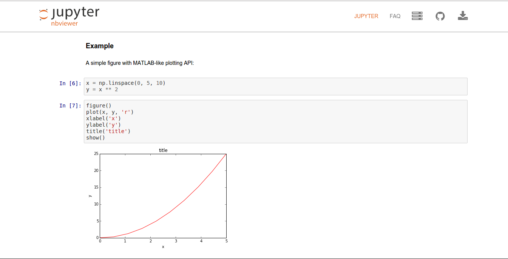

Makesense
La recherche reproductible dans les réseaux de capteurs
Qu'est ce qu'un réseau de capteurs ?

Utilisation d'un réseau de capteurs
- Smart Parking
- Smart metering
- Surveillance de zones
Quel est le contexte technique ?
Réseaux de capteurs
- Ressources matérielles limitées
- Environnement bruité
Pour les simulations/expériences
- Simulation (COOJA)
- Emulation de plateforme contrainte (MSPSIM)
- Déploiement sur des noeuds réels dans un testbed (iotlab)
Enjeux de la recherche reproductible
- Possibilité de refaire une expérience
- Possibilité de partager facilement une expérience
- Réduire le temps de "démarrage"
Solution proposée
Makesense
- Décompose une étape en une série d'étapes indépendantes les unes des autres
- Permet d'avoir une execution commune dans des contextes différents
- Intégration continue
- Codé en Python
Étapes
- Création
- Execution
- Parse
- Analyse
- Plot
- Partage
- Intégration Continue
Création
- Création des firmwares
- Création des fichiers de simulations et des topologies
Outil (Jinja2)
...
{% for mote in motes %}
{{ mote.x }}
{{ mote.y }}
{{ mote.z }}
{{ mote.id }}
{{ mote.mote_type }}
{% endfor %}
...
with open("simulation_file.csc") as f:
f.write(template.render(motes=[
{"x": 0, "y": 0, "z": 0, "id": 0, "mote_type": "router"},
{"x": 1, "y": 1, "z": 1, "id": 1, "mote_type": "server"}
]))
Execution
- Execution sur simulation et testbed réel
- Gestion de l'orchestration des trafics
- Gestion des exceptions
Outils (Fabric)
@host("grenoble")
def run(exp_id):
run_experiment(exp_id)
Parse
- Nettoyage des données (PCAP, texte,...)
- Changement de variable
Outils (regexp, pandas)
_handlers = [
_handle_udp_reception_log,
_handle_udp_sending_log,
...,
]
messages = set()
with open(pj(folder, "serial.log")) as serial_file:
for line in serial_file:
for handler in _handlers:
match = re.match(handler.regexp, line, re.MULTILINE)
if match:
message = handler(match, stats)
messages.add(message)
break
return messages
Analyse
- Partie exploratoire
- Nécessité d'avoir un cout d'itération faible
Outils (Pandas)
import pandas as pd
df = pd.read_csv("my_results.csv")
df[df.pkt_type == "udp"].count()
Plot
- Produire les figures pour le papier
Outils (Pandas, matplotlib)
import pandas as pd
df = pd.read_csv("my_results.csv")
df[df.pkt_type == "udp"].count().plot(kind="bar")
Partage
- Intéractif
- Mise en forme riche (Latex)
jupyter notebook
Intégration continue
- Preuve que l'expérience est reproductible par un tiers
- Dépendance figée
Outils: Travis-ci
- Gratuit pour les étudiants et projets open source
- Intégré à Github
- Lancé à chaque nouveau commit
install:
# Install all dependencies
- sudo apt-get install tshark
script:
- ipython nbconvert --to=python demo.ipynb
- python demo.py
Conclusion
- CIR is good
- Plusieurs types de déploiements supportés
- Outils libres et disponibles
- Citables